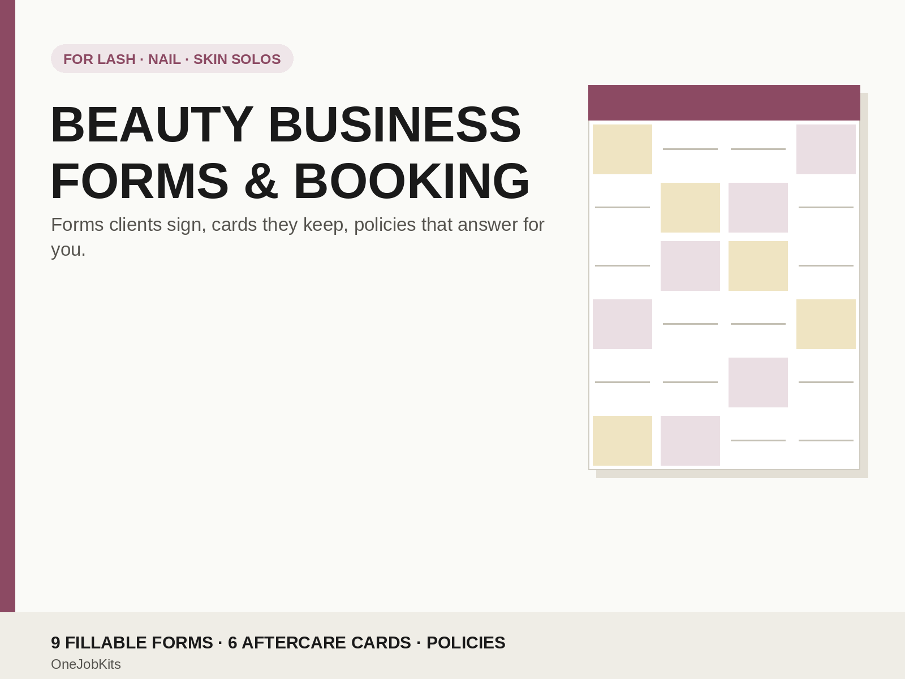

OneJobKits · Kit #37
Beauty Business Forms & Booking Kit — lash tech forms

A one-chair beauty business runs on trust and timing — and most of its awkward moments are paperwork moments: the client who never mentioned an allergy, the consent explained out loud but never signed, the cancellation policy nobody can point to. Proper lash tech forms end those moments before they start. This kit is the whole desk of a small beauty business — lash, nail and esthetician — written in plain words clients actually read, and firm in the places a small business needs to be firm.
This page gives you two of the kit's own forms free, right here: the lash intake and the lash consent & waiver. Below them is the full system — nine forms, six aftercare cards, the booking policies clients agree to before they sit down, and the appointment book that ties the week together. One honesty note up front, printed in the files themselves: this is business paperwork and wording, not legal, medical or insurance advice, and the consent forms carry a review-before-use line — have them checked by your insurer or a local attorney against your own rules before first use.
Free download — start with the Lash Intake Starter
The Lash Intake Starter is a 2-page fillable PDF containing two complete forms from the full pack. Page 1 is the Lash Client Intake: client details, a tick-what-applies health section (contact lenses, eye conditions or recent eye surgery, skin conditions, allergies, pregnancy, new medication), allergies and sensitivities recorded in the client's own words, what the client wants from the service, and an optional emergency contact. Page 2 is the Lash Consent & Waiver: what the service is, an honest list to read line by line, the client's agreement, and signature and date lines — in plain words on purpose, because clients sign what they understand. The starter is free here, on this page — there is no separate free listing to chase.
Download the free Lash Intake Starter (PDF)
What the starter does not do: it covers lashes only, for one service family, with no patch test record, no photo release, no aftercare card to send home, no policies for the client who cancels at the door, and no book to run the week in. The full system below is the whole desk — every service you offer, the visit after the first one, and the paperwork rhythm that keeps it all filed.
What's inside the full system
- Client Forms Pack (fillable PDF, 10 pages, 54 fields, 41 checkboxes) — 9 forms: Lash Intake · Lash Consent & Waiver · Nail Intake · Nail Consent · Esthetician Intake · Facial Consent · Patch Test Record · Photo & Social Release · Return-Visit Health Update — each with signature and date lines where a signature belongs, and consent written in plain words on purpose
- Aftercare Cards Pack (PDF, 6 cards) — one card per service: lash extensions · lash lift & tint · gel & acrylic · manicure & polish · facials · waxing — each laid out as DO / PLEASE DON'T tables a client can follow at home
- Booking & Policies Pack (PDF, 3 pages) — booking, cancellation, late & no-show, and payments & gift cards policies, written warmly and firmly, plus 10 DM booking scripts and a fill-in price-list page
- Appointment Book (PDF, 12 undated weeks) — 7-day weeks with 8:00–20:00 hour lines; undated, so you print the month you need and the book never expires
- Setup Guide (PDF, 2 pages) — the one-evening setup, the filing rhythm that keeps forms findable, and the insurer-review note
- Pro ($49) adds: the Policies Pack — Pro Expansion (service guarantee & adjustments, right to refuse & safety, minors, illness, photos at the chair, privacy, posting checklist), the Loyalty & Referral Program Kit (a stamp-card program: print cards, honest rules, a ten-seconds-a-day tracker), and 30 Social Templates (PNG, 1080×1350 — price list, booking open, availability, aftercare, policy and review posts)
A filled example — so you can see the finished thing
The example below follows one fictional client through the paperwork journey the kit is built for — Maya, an invented first-time lash client. Maya does not exist; what the table demonstrates is which form does which job, in the order a real first visit uses them:
| Step of the visit | Which form does the job (sample — fictional) |
|---|---|
| 1 · Intake, before the appointment | Maya completes the Lash Intake from the Client Forms Pack: contact lenses ticked, a glue sensitivity written in her own words in the allergies box, and the style and length she wants noted — so the conversation at the chair starts from her answers, not from memory |
| 2 · Consent & waiver, read and signed | The Lash Consent & Waiver is read together and signed once, with the date line filled: what the service is, the honest list (results depend on her natural lashes and her home care; infills are maintenance, booked and charged separately), and her agreement to follow the aftercare given that day |
| 3 · Patch test recorded | Her patch test goes on the Patch Test Record — the form that holds three tests per page — with the product, the date and the outcome written down, so the record exists before the full set is ever applied |
| 4 · Appointment booked under the policies | Her infill is booked in the Appointment Book (an undated week page, 8:00–20:00 lines) under the Booking & Policies Pack she was sent at booking: the deposit that holds the slot, the reschedule window, and the late-arrival rule — agreed before, not argued after |
| 5 · Aftercare card sent home | The Lash Extensions aftercare card goes home with her: keep them dry for the first 24 hours, brush gently each morning, no oil-based products near the eyes, infills at 2–3 weeks — the DO / PLEASE DON'T table that decides how long the set lasts |
Five steps, five pieces of paper, no gaps: what she told you, what she agreed to, what was tested, what was booked and what she took home are all written down — which is the entire point of a forms system.
Who it is for
Solo and one-chair beauty professionals — lash technicians, nail technicians and estheticians — and very small salons that offer several of those services and want one consistent paperwork set instead of a folder of mismatched downloads. It suits owners who book by DM, take deposits, and want policies clients have actually seen before a dispute, not after one.
Who it is not for
Anyone looking for legal, medical or insurance advice, or for forms that promise protection by themselves — these are business paperwork and wording, and the consent and waiver forms must be reviewed by your insurer or a local attorney against your state or country rules before first use. It also does not replace your local licensing rules, and it does not set patch-test timing or contraindication decisions: those follow your training and your product manufacturers — the forms record them, they don't set them.
Questions buyers ask
- Which services do the forms cover?
- Three service families, nine forms. For lashes: the Lash Intake and the Lash Consent & Waiver. For nails: the Nail Intake and Nail Consent. For skin: the Esthetician Intake and the Facial Consent. Shared across services: the Patch Test Record (three tests per page), the Photo & Social Release, and the Return-Visit Health Update, so a regular client's file stays current after the first visit instead of going stale.
- Are the forms fillable, and do they have signature lines?
- Yes. The Client Forms Pack is a fillable PDF — 10 pages, 54 fields and 41 checkboxes — so clients can complete it on a phone or tablet, or you can print it and fill it in by hand. The consent forms carry signature and date lines, and the wording is plain on purpose: the pack's own line is that clients sign what they understand. The free starter on this page is fillable too, so you can test the format before buying.
- Is this legal advice — will the consent form protect my business?
- No, and the files say so themselves: this kit is business paperwork and wording, not legal, medical or insurance advice. A well-kept signed form is a real record of what a client told you and agreed to, and that matters — but no template can promise legal protection. Before first use, have the consent and waiver forms reviewed by your insurer or a local attorney against your state or country rules, and follow your local licensing rules, which this kit does not replace.
- What do the aftercare cards cover?
- Six cards, one per service: lash extensions, lash lift & tint, gel & acrylic, manicure & polish, facials, and waxing. Each card is a DO / PLEASE DON'T table written for the client at home — for lash extensions, for example: keep them dry for the first 24 hours and brush gently each morning; don't wet or steam them on day one, use oil-based products near the eyes, or pull at them. Print them on card stock or send the page as a photo after the appointment.
- How do the booking policies and DM scripts work?
- The Booking & Policies Pack (3 pages) gives you the four policies a one-chair business lives by — booking, cancellation, late & no-show, and payments & gift cards — written warmly, with brackets for your own deposit, reschedule window and late-arrival limit, plus a fill-in price-list page. The 10 DM booking scripts carry the same policies into the conversation where bookings actually happen, so the answer to “can I move my appointment?” is a script you send, not a decision you improvise.
- What does Pro add?
- Three things. The Policies Pack — Pro Expansion covers the harder conversations: service guarantee & adjustments, right to refuse & safety, minors, illness, photos at the chair, privacy, and a posting checklist. The Loyalty & Referral Program Kit sets up a stamp-card program with print cards, honest rules and a tracker that takes ten seconds a day. And the 30 Social Templates (PNG, 1080×1350) cover the posts a beauty business repeats — price list, booking open, availability, aftercare, policy and review posts.
- What does the free starter cover, and what does the full kit add?
- The free Lash Intake Starter is 2 fillable pages — the Lash Client Intake and the Lash Consent & Waiver — the paperwork of a first lash appointment. The full kit adds the other seven forms (nails, esthetician and facials, patch test, photo release, return-visit update), all six aftercare cards, the booking and policies pack with its DM scripts, the 12-week appointment book and the setup guide — and in Pro, the expanded policies, the loyalty program and the social templates.
Prices
Base: $29 · Pro (adds the expanded policies, loyalty & referral program and 30 social templates): $49 — one-time payment, digital download. No subscription; the files are yours.
Can't find the kit you need?
We build it. Ask us — first asker gets it at half the shelf price. Tell us the job at onejobkits.com and we will build the kit for it.
Related kits
Please know: this kit is business paperwork and wording only — not legal, medical or insurance advice — and it does not replace your local licensing rules. Have the consent and waiver forms reviewed by your insurer or a local attorney against your state or country rules before first use. Patch-test timing and contraindication decisions follow your training and your product manufacturers; the forms record them, they don't set them. All example data is fictional (Maya is invented, and the example above says so).